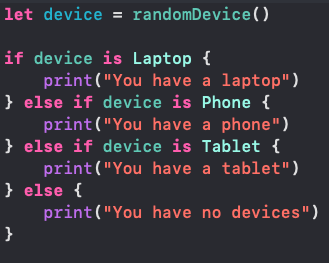
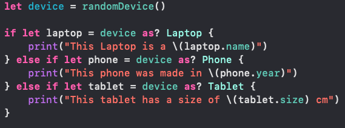
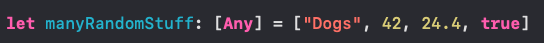

In Swift you can check to see if a object has a certain type, you can check by using "is"
You can use the as? operator to try and downcast the value to a more specific type and store it in a new constant. You'll use an if-let syntax to check the conditions before converting the type. This method is better to use when the object created is used in the curly braces
Any can represent an instance of any type
As seen above, many different types were put into this array, this is because the array is of type [Any]